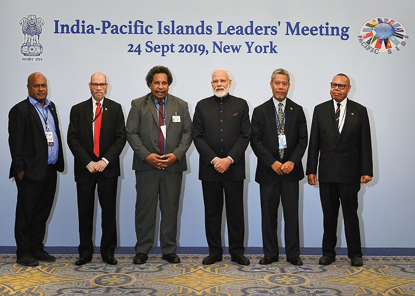

PM.Narindra Modi
The man who changed India

Photo of PM.Narindra Modi at Indian-Pacific Islands Leaders' Meeting
These are some facts about PM.Narindra Modi
- 1 - As a child, Narendra Modi helped his father sell tea at a railway station. He also ran a tea-stall with his brother.
- 2 - Narendra Modi wanted to be a sage when he was young. He left his home right after he graduated from high school as a result of his engagement to Jashodaben when he was just 13 years old and his growing interest in different forms of worship and meditation.
- 3 - He wanted to become a 'pracharak' in Rashtriya Swayamsewak Sangh (RSS) so he kept his marriage a secret. He acknowledged his marriage to Jashodaben while he was filling his nomination papers for a parliamentary seat in 2014 general elections because it had become mandatory to fill marital status column.
- 4 - He has never consumed alcohol or smoked a cigarette in his life. He has also been a pure vegetarian. Every day, he gets up at 5.30 am without fail and only sleeps five hours a day.
- 5 - It is said that he did not take a single day off for 13 years, when he was the Chief Minister of Gujarat.
- 6 - Also known for his powerful speeches, it is said that this mightiest orator can move crowds with his eloquent speeches. He has always been a keen debater.
- 7 - Modi was denied a visa to the United States but was granted one when he became the Prime Minister of India last year.
- 8 - Modi is known to be very choosy about his clothes and Jade Blue happens to be Modi's favourite clothing retailer he shops from.
- 9 - For years, Modi used to burn his belongings or anything related to his past. This was his way of disconnecting from his past.
- 10 - Modi loves technology and logs into Twitter every morning to read what has been written about him.
“Don't take rest after your first victory because if you fail in second, more lips are waiting to say that your first victory was just luck.” --- APJ Abdul Kalam